Volkswagen
Volkswagen é uma montadora de automóveis alemã, conhecida por sua inovação e qualidade. A empresa foi fundada em 1937 e desde então tem sido uma das líderes da indústria automotiva mundial.
Card Dos Carros
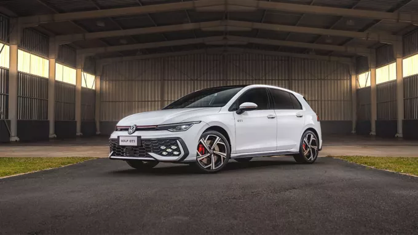
Golf
O Volkswagen Golf é um automóvel fabricado pela Volkswagen, lançado no mercado europeu em 1974 e no Brasil em 1995. É conhecido por sua qualidade, dirigibilidade e versatilidade, sendo um dos hatches mais desejados do Brasil.
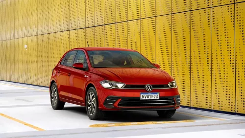
Polo
O Polo é um hatchback compacto que combina estilo e eficiência. Com um design moderno e tecnologia avançada, é perfeito para a cidade.
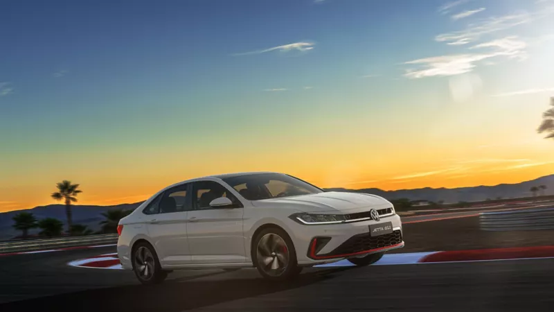
Jetta GLI
O Jetta é um sedã que oferece conforto e desempenho. Com um interior espaçoso e tecnologia de ponta, é ideal para quem busca sofisticação.
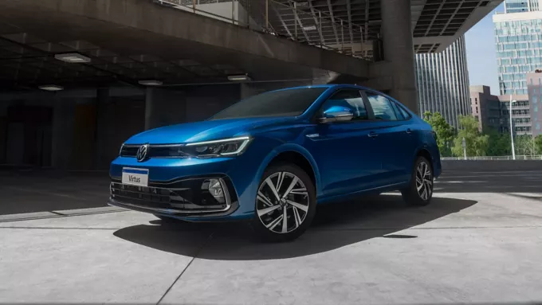
Virtus
O Virtus é um sedã que combina elegância e praticidade. Com um design sofisticado e amplo espaço interno, é ideal para quem busca conforto e estilo.
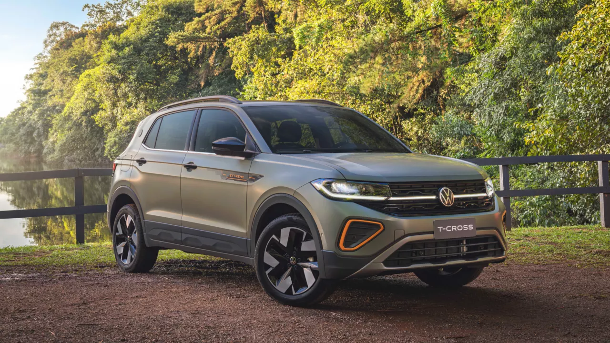
T-Cross
O T-Cross é um SUV compacto que oferece versatilidade e conforto. Com um design robusto e tecnologia avançada, é ideal para a cidade e para aventuras.
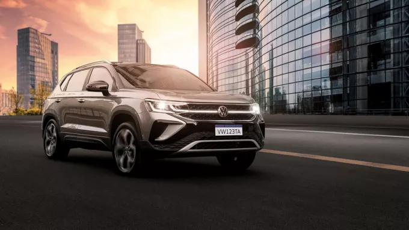
Taos
O Taos é um SUV compacto que combina estilo e praticidade. Com um design moderno e tecnologia avançada, é perfeito para a cidade e para aventuras.
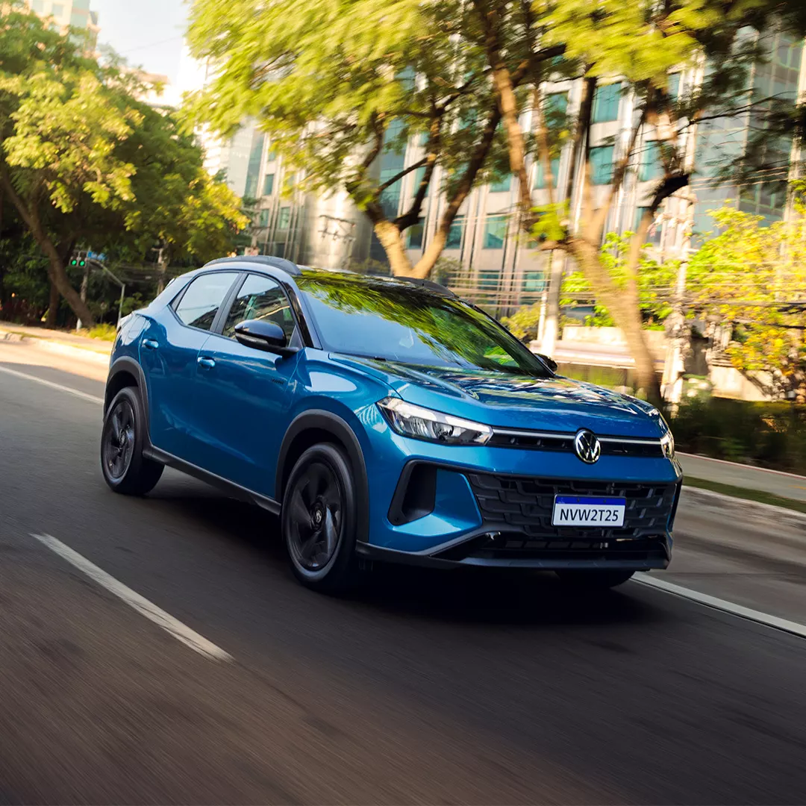
Tera
O Tera é um SUV que combina design moderno e tecnologia avançada. Com um interior espaçoso e confortável, é perfeito para a família e para aventuras.
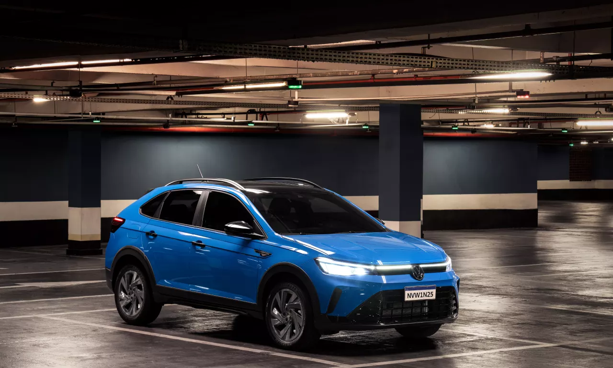
Nivus
O Nivus é um SUV coupé que combina estilo e praticidade. Com um design moderno e tecnologia avançada, é perfeito para a cidade e para aventuras.
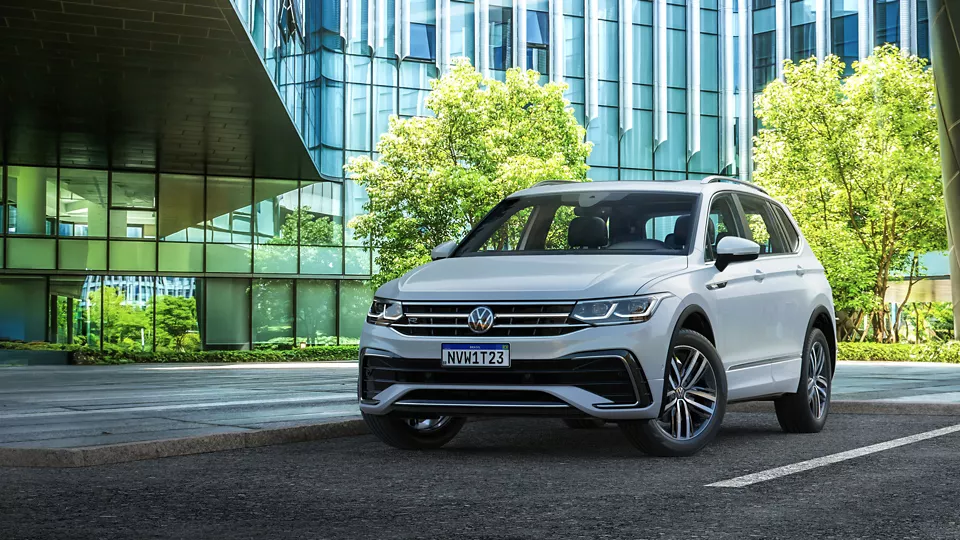
Tiguan
O Tiguan é um SUV que combina estilo e versatilidade. Com um design robusto e tecnologia avançada, é perfeito para quem busca conforto e desempenho.
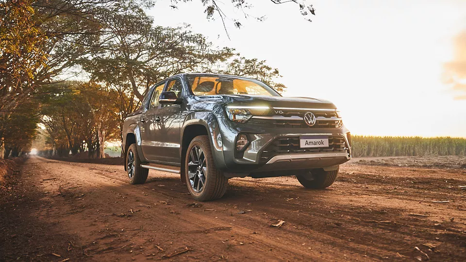
Amarok
O Amarok é uma picape que combina robustez e tecnologia. Com um design imponente e um interior confortável, é perfeita para quem busca aventura e desempenho.
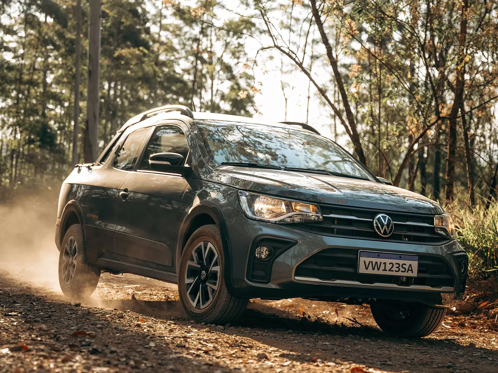
Saveiro
A Saveiro é uma picape que combina praticidade e estilo. Com um design robusto e um interior confortável, é perfeita para quem busca versatilidade e desempenho.

Golf GTI
Golf GTI não é um carro esportivo que se vê por aí. E isso é intencional. Com poucas unidades disponíveis, você tem a chance rara de entrar para o seleto grupo de entusiastas que, por décadas, compartilham a paixão pela tradição e a performance deste ícone.
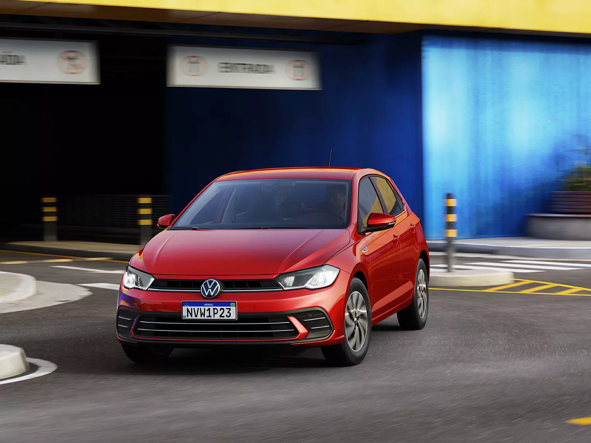
Polo Track
O Polo Track é um hatch compacto da Volkswagen, projetado para oferecer um bom custo-benefício e conforto.
Santana
O Volkswagen Santana foi introduzido no mercado brasileiro na década de 1980 e rapidamente se destacou como um dos sedãs de luxo mais desejados da época.
VW 70 anos
Este filme comemora os 70 anos da Volkswagen no Brasil com uma homenagem às diferentes gerações – de carros e pessoas – que fizeram parte dessa linda história. Mostra um encontro tão emocionante quanto o longo caso de amor entre a Volks e os brasileiros. E também mostra que os próximos 70 anos já começam repletos de inovação. 💙 #VW70 #oNovoVeioDeNovo #VWBrasil #vwBrasil70
Marceneiro
Ele trabalha com pão e tijolo
Marceneiro
Ele trabalha com pão e tijolo